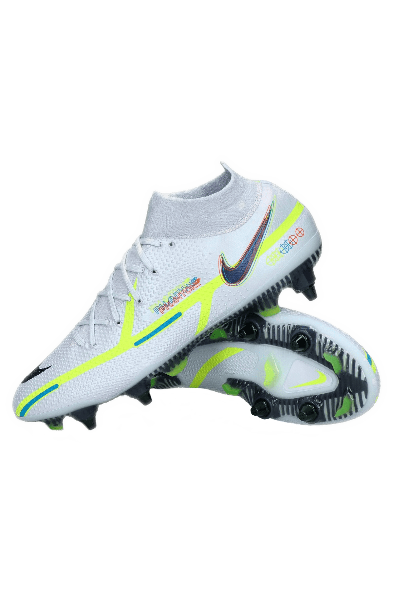
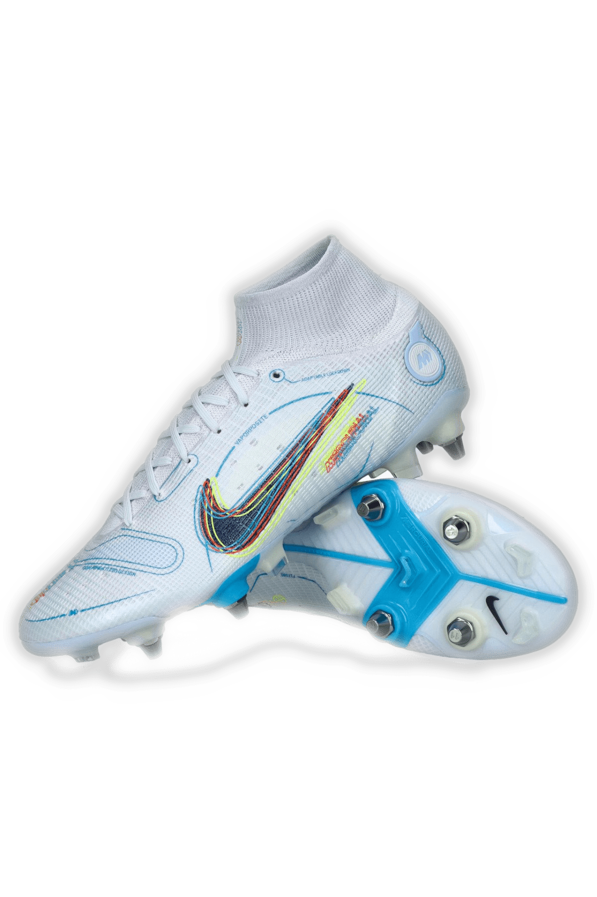
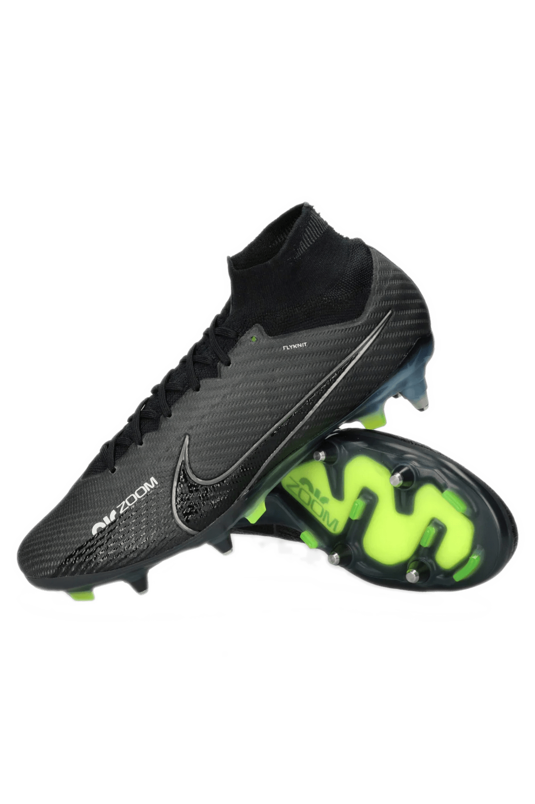
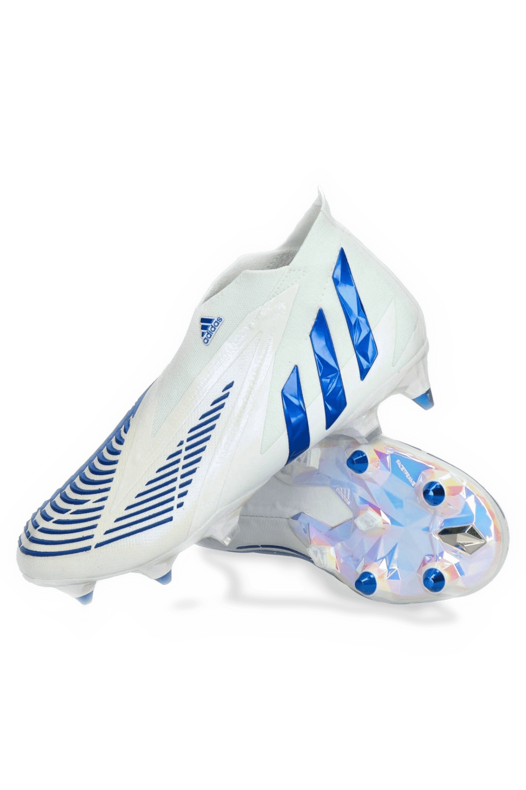
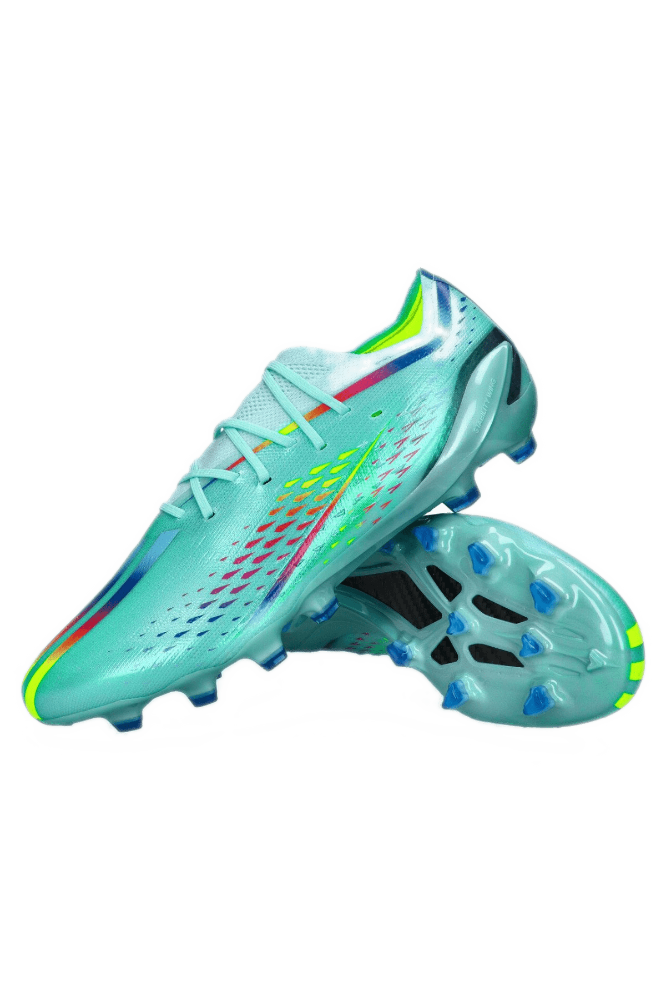

Nike Phantom GT2 Elite SG-Pro

Model Nike Phantom GT2 Elite SG-Pro czerpie inspirację z modelu Phantom GT. Wyróżnia się nowym fasonem i wypukłym wzorem, dzięki czemu pozwala jeszcze lepiej kontrolować lot piłki. Boczne wiązanie zapewnia doskonałą strefę kontaktu z piłką, co przekłada się na większą precyzję podczas strzałów, podań i dryblingów.
Technologia All Conditions Control (ACC) umożliwia czucie piłki zarówno na suchej, jak i mokrej nawierzchni. Sprawia też, że panowanie nad futbolówką jest jeszcze prostsze dzięki stałym właściwościom powierzchni buta.
Konstrukcja Flyknit składa się z otaczających stopę elastycznych włókien przędzy, które odpowiadają za lekkość i dokładne dopasowanie. Zapewnia to wsparcie, którego potrzebujesz, aby szybko mijać przeciwników.
Strategicznie umiejscowiona czepliwa tekstura na cholewce zapewnia precyzyjne czucie piłki przy podaniach, strzałach i dryblingu.
Nike Mercurial Superfly 8 Elite SG-Pro

Odblokuj plan szybkości dzięki butom Nike Mercurial Superfly 8 Elite.
Płytka Nike Aerotrak z mikrorowkami zapewnia wybuchowe przyspieszenie.
Kołki Chevron zapewniają wielokierunkową przyczepność na mokrych nawierzchniach.
Konstrukcja Flyknit otula kostkę oddychającą, elastyczną przędzą, zapewniając dopasowanie jak w skarpetce.
Technologia NikeGrip we wkładce wykorzystuje przędzę antypoślizgową, która zapobiega ślizganiu się stopy wewnątrz buta.
Nike Mercurial Superfly 9 Elite SG-Pro

Zmień warunki gry dzięki wyrazistemu fasonowi butów Superfly 9 Elite SG-Pro. Wykorzystaliśmy w nich poduszkę gazową Zoom Air, stworzoną specjalnie z myślą o piłce nożnej, oraz czepliwą fakturę na wierzchu, która zapewnia niespotykane czucie piłki, dzięki czemu możesz dać z siebie wszystko także w tych ostatnich, decydujących minutach meczu. Poczuj wybuchową szybkość na boisku i rozgrywaj piłkę z prędkością błyskawicy. Fast is in the Air. Zastosowana w tej wersji technologia Anti-Clog Traction w płytce podeszwowej chroni przed przywieraniem błota.
Witamy na boisku, Zoom
Po raz pierwszy w historii firma Nike opracowała zupełnie nową, stworzoną specjalnie do gry w piłkę nożną poduszkę gazową Zoom Air, która rozciąga się na 3/4 długości buta. Została umieszczona w płytce, daje jeszcze lepsze czucie sprężystości oraz pozwala szybciej poruszać się po boisku i znaleźć wolną przestrzeń w najważniejszych momentach meczu, by zdobyć bramkę czy uciec obrońcom.
Zwiększ swoją szybkość
Wzmocnienie odpowiadające za prędkość, umieszczone wewnątrz całej konstrukcji, jest wykonane z cienkiego, ale mocnego materiału, który utrzymuje stopę przy podeszwie zewnętrznej i zapewnia optymalne dopasowanie bez zbędnego obciążenia.
Zakotwicz się i ruszaj
Metalowe korki na podeszwie zewnętrznej zapewniają niezrównaną przyczepność i umożliwiają szybkie oderwanie butów od podłoża.
Jeszcze lepsze dopasowanie
Miękki i rozciągliwy materiał Flyknit otula kostkę oraz zapewnia dokładne dopasowanie. Udoskonalony fason charakteryzuje się lepszym dopasowaniem wokół stopy. Osiągnęliśmy ten rezultat dzięki zaangażowaniu setek sportowców testujących nasz produkt. Pozwoliło nam to uzyskać lepiej wyprofilowany nosek i bardziej dopasowany zapiętek.
Poczuj piłkę
Cholewka jest wykonana z materiału Vaporposite, który łączy w sobie czepliwą siateczkę z materiałem najwyższej jakości, dzięki czemu zapewnia optymalną kontrolę nad piłką przy dużych prędkościach. Materiał sprawia, że cała powierzchnia cholewki jest przyjemna w dotyku. Dokładnie i miękko otula stopę, a jednocześnie ją stabilizuje, co przekłada się na bardziej naturalne czucie piłki podczas dryblingów, podań czy strzałów na bramkę.
Adidas Predator Edge+ SG

Buty piłkarskie, które pomogą Ci kontrolować każdą składową gry.
Unik. Moc. Kontrola. Gdy masz przewagę, boisko jest pełne możliwości. Zobacz piękną grę z zupełnie nowej perspektywy w butach adidas Predator. Te buty piłkarskie bez sznurowadeł pomogą Ci strzelać gole dzięki cholewce Zone Skin, która ma ukryte, prążkowane sekcje rozmieszczone i ukształtowane tak, aby umożliwić zawodnikowi różne rodzaje kontaktu z piłką. Wyważona konstrukcja Power Facet w dzielonej podeszwie zewnętrznej w przedniej części stopy dodaje mocy każdemu uderzeniu. Elastyczny kołnierz adidas PRIMEKNIT blokuje stopę, gdy zyskujesz coraz większą kontrolę nad przebiegiem gry.
Adidas X Speedportal.1 AG

Dynamiczne buty adidas wykonane częściowo z materiałów pochodzących z recyklingu.
Dobrzy zawodnicy potrafią znaleźć dobrą okazję. Wybitni zawodnicy sami je tworzą. Wkrocz do świata wielowymiarowej szybkości w butach adidas X Speedportal. Gładkie i superwygodne buty piłkarskie wspierają błyskawiczne reakcje dzięki sprężystej płytce Carbitex z włókna węglowego na całej długości podeszwy zewnętrznej przystosowanej do gry na sztucznej trawie. Otulająca stopę cholewka adidas PRIMEKNIT ma wstawki z pianki EVA po wewnętrznej stronie i lekką, węglową blokadę pięty po zewnętrznej stronie, która zapewnia Ci stabilizację podczas szybkiej gry.
Czasy, gdy szybkość oznaczała pokonanie jakiegoś dystansu w jakimś czasie, należą już do przeszłości. Reakcja, świadomość, myślenie, ruch – mówimy o szybkości we wszystkich możliwych wymiarach. Wypróbuj nowe X Speedportal; niech Twoje stopy nawiążą kontakt z Twoją świadomością i szybkością myślenia. Speedframe, system stabilizujący i Speedskin pomagają połączyć umysł, ciało i... but. Dzięki temu jesteś w stanie odblokować szybkość we wszystkich wymiarach.
 żna
żna